MAXDISTCOLOR Examples
The function MAXDISTCOLOR generates an RGB colormap of maximally distinct colors. Its optional input arguments are explained in this illustrated document. Text arguments may be supplied either as string scalar or char vector.
Although it is tempting to create colors which are extremely distinct, such sets of colors are garish and unattractive: restricting the lightness and chroma ranges provides for much more pleasant sets of distinct colors. See the last section "Interactive Tool" for an example, and be prepared to spend some time experimenting to find the right colorspace and parameter values for your own needs and aesthetics.
Printing also requires the lightness and chroma ranges to be restricted (e.g. based on the ICC profile for the specific printing device).
Warning: the task grows exponentially with the number of requested colors and the gamut size. Some option permutations are not tractable.
Contents
- Getting Started (with OKLab)
- Output 2: Colors in the Uniform Colorspace (UCS)
- Output 3: Greedy Algorithm Status Information
- Input 2: Perceptually Uniform Colorspaces DIN99, DIN99o, OSA-UCS, CIELab, ...
- Input 2: Perceptually Uniform Colorspace CAM02-LCD (Recommended)
- Input 3+: Specify Included Colors
- Input 3+: Specify Excluded Colors
- Input 3+: Limit the Lightness Range
- Input 3+: Limit the Chroma Range
- Input 3+: Specify the Numeric Class
- Input 3+: Specify the Color Depth
- Input 3+: Sort the Colormap
- Bonus: Color Names
- Bonus: Visualize Color Distances
- Bonus: Interactive Tool
Getting Started (with OKLab)
The simplest usage is to call MAXDISTCOLOR with the number of colors and the colorspace conversion function SRGB_TO_OKLAB. The first output is an RGB matrix of maximally-distinct colors:
N = 9; fnh = @sRGB_to_OKLab; rgb = maxdistcolor(N,fnh) % That's it! Now lets test those colors in a plot: X = linspace(0,10,1000); Y = bsxfun(@(x,n)n*sin(x+2*n*pi/N), X(:), -N:-1); axes('ColorOrder',rgb, 'NextPlot','replacechildren', 'XTick',[],'YTick',[]) plot(X,Y, 'linewidth',5)
rgb =
0.53968 0 0.98413
0 0.4252 0
0.8254 0.007874 0.28571
0.33333 0 0
0 1 0
0 0.66142 0.84127
0 0 0.57143
0.92063 0.62992 0
1 0.50394 1
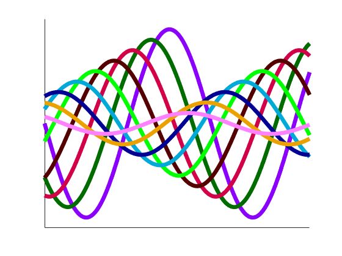 Output 2: Colors in the Uniform Colorspace (UCS)
The second output is a matrix of the colors given in the perceptually uniform colorspace (i.e. after conversion by the provided function handle):
[~,ucs] = maxdistcolor(N,fnh)
ucs =
0.53747 0.13553 -0.25702
0.46161 -0.12462 0.095589
0.55099 0.21294 0.053434
0.28227 0.10109 0.056553
0.86645 -0.23392 0.17942
0.6834 -0.090758 -0.09411
0.2979 -0.02132 -0.20536
0.76115 0.039285 0.15507
0.78773 0.17986 -0.11526
Output 3: Greedy Algorithm Status Information
An easy way to view the (maximized) minimum distance between the colors is to return the third output, which is a scalar structure of information about the completed greedy algorithm. The three distances included are:
| Fieldname | Value |
|---|---|
minDistOutput | minimum distance between all output colors |
minDistAndExc | minimum distance including any exc colors |
minDistNotInc | minimum distance excluding any inc colors |
[~,~,status] = maxdistcolor(N,fnh)
status =
struct with fields:
seconds: 1.542
options: [1×1 struct]
gamutSize: 524288
iterations: 95
minDistOutput: 0.28953
minDistAndExc: 0.28753
minDistNotInc: 0.28953
colorspace: 'OKLab'
axesLabels: {'L' 'a' 'b'}
Input 2: Perceptually Uniform Colorspaces DIN99, DIN99o, OSA-UCS, CIELab, ...
While OKLAB is certainly OK, you can use any function which converts from an sRGB matrix to some kind of Lab-like colorspace (i.e. with columns [lightness,a,b] or similar). A few other colorspace conversion functions are included together with MAXDISTCOLOR for you to experiment with: please see MAXDISTCOLOR_DEMO for examples of how to call them.
Note the OSA-UCS default algorithm is not suitable for MAXDISTCOLOR, the function must be called with its 2nd and 3rd inputs set to TRUE:
fnh = @(m)sRGB_to_OSAUCS(m,true,true); rgb = maxdistcolor(N,fnh) axes('ColorOrder',rgb, 'NextPlot','replacechildren', 'XTick',[],'YTick',[]) plot(X,Y, 'linewidth',5)
rgb =
0.015873 0.56693 0.8254
0 0 1
0.90476 0 1
0 1 0
0.36508 0 0.52381
0.46032 0 0
1 0.58268 0
1 0 0.46032
0.12698 0.48031 0
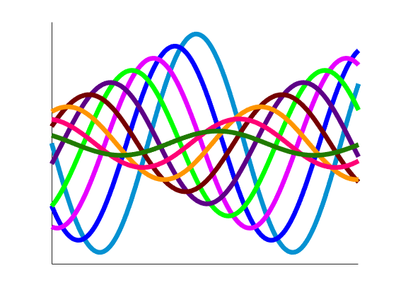 Input 2: Perceptually Uniform Colorspace CAM02-LCD (Recommended)
The color distinctiveness depends significantly on the quality of the colorspace used: it is strongly recommended to use a high-quality uniform colorspace, for example one of CAM02-UCS or CAM02-LCD, both of which are derived from the comprehensive color appearance model CIECAM02. You can download my implementation of CIECAM02 and use the function SRGB_TO_CAM02UCS and either select 'UCS' space (for closer colors) or 'LCD' space (for very dissimilar colors):
fnh = @(m)sRGB_to_CAM02UCS(m,true,'LCD'); rgb = maxdistcolor(N,fnh) axes('ColorOrder',rgb, 'NextPlot','replacechildren', 'XTick',[],'YTick',[]) plot(X,Y, 'linewidth',5)
rgb =
0.74603 0 0
0.63492 0 1
0 0.53543 0
0 0.70079 0.98413
0.50794 1 0
0.39683 0.33071 0.34921
1 0.47244 0.73016
0.87302 0.59055 0
0 0.015748 0.68254
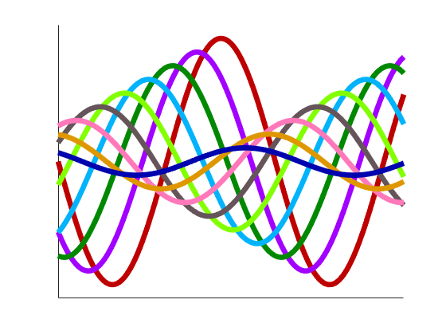 Input 3+: Specify Included Colors
Option inc includes the specified color/s in the output colormap. For example it can be used to find a set of distinct colors that includes colors from a corporate or academic colorscheme. By default inc=[].
rgb = maxdistcolor(N,fnh, 'inc',[1,0,0;1,1,0]) % Include red and yellow. axes('ColorOrder',rgb, 'NextPlot','replacechildren','XTick',[],'YTick',[]) plot(X,Y, 'linewidth',5)
rgb =
1 0 0
1 1 0
0.61905 0 1
0 0.32283 0
0 0.65354 0.8254
0 0.007874 0.66667
0.47619 0 0.2381
1 0.48819 0.79365
0.69841 0.54331 0.20635
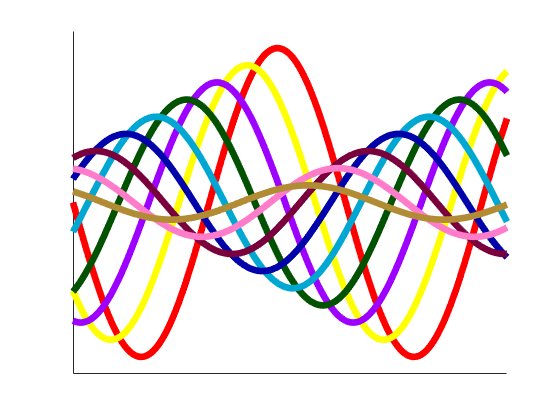 Input 3+: Specify Excluded Colors
Option exc excludes the specified color/s from the output colormap. This option is particularly useful for:
- specifying the background color of the plot, to ensure that plotted data are distinguishable from the background: exc=[background]
- adding new distinct data to an existing plot or adding new colors to an existing color palette: exc=[the existing colors; background]
By default both black and white are excluded, i.e. exc=[0,0,0;1,1,1], so that the plotted data are visible on a white axes background (or when printed onto white paper), and so that the data are not confused with the axes, tickmarks, gridlines, etc.
rgb = maxdistcolor(N,fnh, 'exc',[0,0,0]) % Exclude black (e.g. background). axes('ColorOrder',rgb, 'NextPlot','replacechildren', 'XTick',[],'YTick',[], 'Color',[0,0,0]) plot(X,Y, 'linewidth',5) set(gcf,'InvertHardcopy','off', 'Color','white')
rgb =
1 0.92126 0
0.92063 0 0.84127
0 0.6063 1
0.49206 0 0.12698
0.34921 0.023622 0.65079
1 0.8189 1
1 0.40157 0.031746
0 0.44094 0
0 0.99213 0.84127
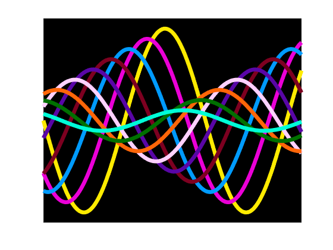 Input 3+: Limit the Lightness Range
To create attractive sets of colors, or to match document requirements, it can be useful to limit the lightness range of the output colors. The output lightness range is controlled using options Lmin and Lmax. Note that the lightness limits are scaled so that 0==black and 1==white.
clf('reset') [rgb,ucs,sts] = maxdistcolor(N,fnh, 'Lmin',0.4, 'Lmax',0.6); scatter3(ucs(:,3),ucs(:,2),ucs(:,1), 256, rgb, 'filled') % Plot outline of RGB cube: M = 23; [X,Y,Z] = ndgrid(linspace(0,1,M),0:1,0:1); mat = fnh([X(:),Y(:),Z(:);Y(:),Z(:),X(:);Z(:),X(:),Y(:)]); J = reshape(mat(:,1),M,[]); a = reshape(mat(:,2),M,[]); b = reshape(mat(:,3),M,[]); line(b,a,J,'Color','k') axis('equal') grid('on') view(-32,5) % Add Labels: title('Colors with Limited Lightness, Inside RGB Cube') zlabel(sts.axesLabels{1}) ylabel(sts.axesLabels{2}) xlabel(sts.axesLabels{3})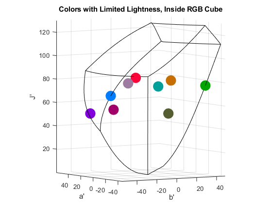
Input 3+: Limit the Chroma Range
To create attractive sets of colors or to match document requirements it can be useful to limit the chroma range of the output colors. The output chroma range is controlled using options Cmin and Cmax. Note that the chroma limits are scaled so that 1==max(gamut chroma).
[rgb,ucs,sts] = maxdistcolor(N,fnh, 'Cmin',0.5, 'Cmax',0.6); scatter3(ucs(:,3),ucs(:,2),ucs(:,1), 256, rgb, 'filled') % Plot outline of RGB cube: line(b,a,J,'Color','k') axis('equal') grid('on') view(0,90) % Add Labels: title('Colors with Limited Chroma, Inside RGB Cube') zlabel(sts.axesLabels{1}) ylabel(sts.axesLabels{2}) xlabel(sts.axesLabels{3})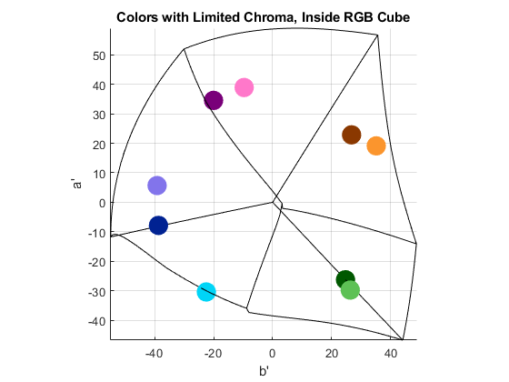
Input 3+: Specify the Numeric Class
By default MAXDISTCOLOR creates and stores the RGB values in double class arrays. The class option allows the user to select either 'double' or 'single' class for generating the sRGB numeric array, which is then provided as an input to the supplied colorspace function. Single uses less memory, which may benefit timing and runnability.
rgb = maxdistcolor(N,fnh, 'class','single')
rgb =
9×3 single matrix
0.74603 0 0
0.63492 0 1
0 0.53543 0
0 0.70079 0.98413
0.50794 1 0
0.39683 0.33071 0.34921
1 0.47244 0.73016
0.87302 0.59055 0
0 0.015748 0.68254
Input 3+: Specify the Color Depth
By default MAXDISTCOLOR creates the RGB gamut using [6,7,6] bits for the red, green, and blue channels. The bits specify how many samples are taken of the respective color channel: NumberOfSamples = pow2(bits), as shown here: https://en.wikipedia.org/wiki/Color_depth. Therefore the bit options can be used to:
- increase the bits per channel to give a bigger choice of colors (and make the greedy algorithm slower and more robust). Using 8 bits per channel (TrueColor) requires 64 bit MATLAB and more than 8 GB of RAM.
- decrease the bits per channel to decrease the gamut and speed up the function. Note that for a small number of bits the greedy algorithm can fail to identify the maximally distinct colors.
Specifying 2 bits per channel defines an RGB gamut with 64 colors, so requesting 64 colors will return every color from that RGB gamut:
clf('reset') rgb = maxdistcolor(64,fnh, 'bitR',2,'bitG',2,'bitB',2, 'exc',[]); scatter3(rgb(:,3),rgb(:,2),rgb(:,1), 256, rgb, 'filled') grid('on') view(40,32)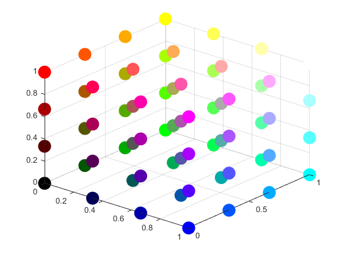
Input 3+: Sort the Colormap
The greedy algorithm returns an undefined, non-random color order. Some color orders that might be more attractive or useful can be selected using the sort option: see the m-file help for the complete list of sort orders. Note that some orders use an algorithm that checks all permutations: those orders will only work for nine or fewer colors.
clf('reset') rgb = maxdistcolor(N,fnh, 'sort','hue'); image(permute(rgb,[1,3,2])) set(gca,'XTick',[],'YTick',1:N,'YDir','normal') title('Sorted Colors') ylabel('Colormap Index')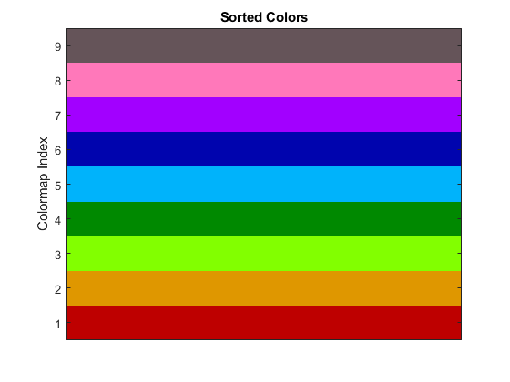
Bonus: Color Names
Sometimes it can be useful to give colors names, e.g. when providing a list of colors for a user to select from, or for defining HTML colors. One easy way to find a color name is to download my FEX submission COLORNAMES:
text(ones(1,N), 1:N, colornames('CSS',rgb),... 'HorizontalAlignment','center', 'BackgroundColor','white') title('Colors with Color Names') ylabel('Colormap Index')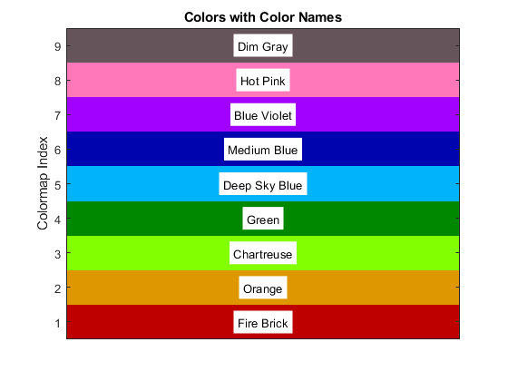
Bonus: Visualize Color Distances
It is easy to plot the distances between the returned color nodes, providing a visual confirmation that the colors are maximally distinct. The vertical gap between the mono-colored points (along the x-axis) and the bi-colored points indicates the closest distance of the colors in the colorspace (this distance is maximized by the repeated greedy algorithm):
clf('reset') [rgb,ucs,sts] = maxdistcolor(N,fnh, 'sort','maxmin'); for k = 1:N dst = sqrt(sum(bsxfun(@minus,ucs,ucs(k,:)).^2,2)); scatter(1:N, dst, 123, rgb,... 'MarkerFaceColor',rgb(k,:), 'LineWidth',2.8, 'Marker','o') hold on end title(sprintf('Euclidean Distances in %s Colorspace',sts.colorspace)) ylabel('Euclidean Distance') xlabel('Colormap Index') pause(1)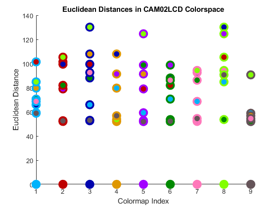
Bonus: Interactive Tool
An easy way to vary the optional arguments and see how they affect the output colormap is to use the included function MAXDISTCOLOR_VIEW. Simply adjust the sliders, menu options, and the included/excluded colors to create new sets of colors. For example, many attractive color sets can be found by limiting the lightness and chroma to quite tight ranges:
maxdistcolor_view(7,fnh, 'Cmin',0.2,'Cmax',0.4, 'Lmin',0.7,'Lmax',0.8, 'sort','lightness')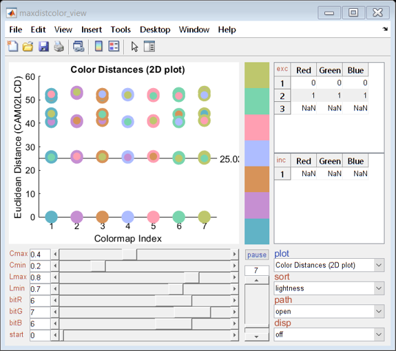